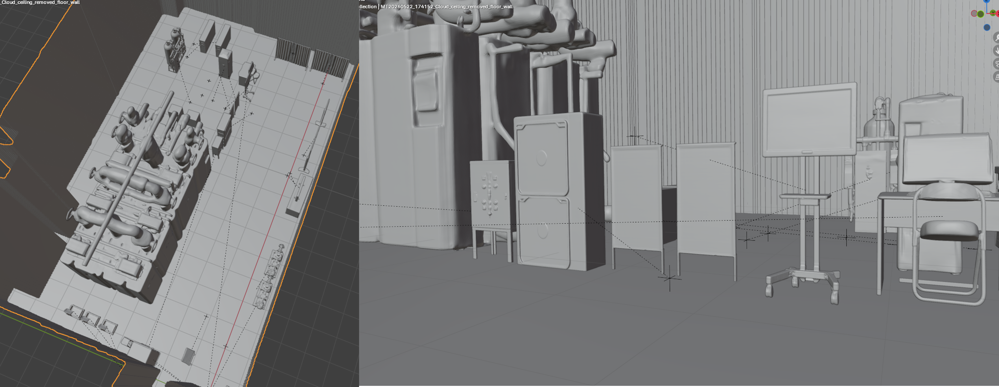
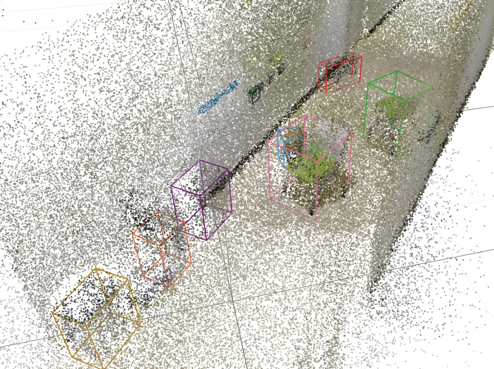
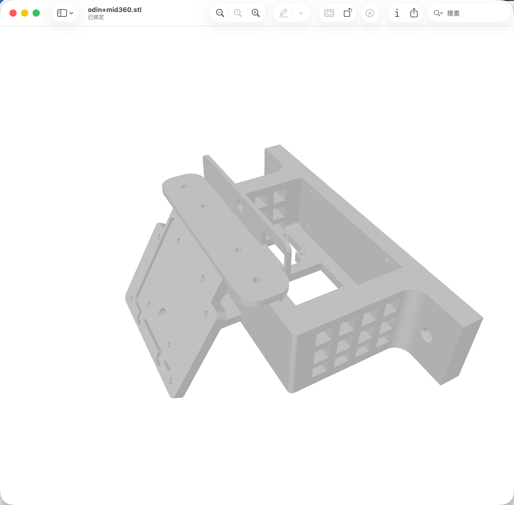
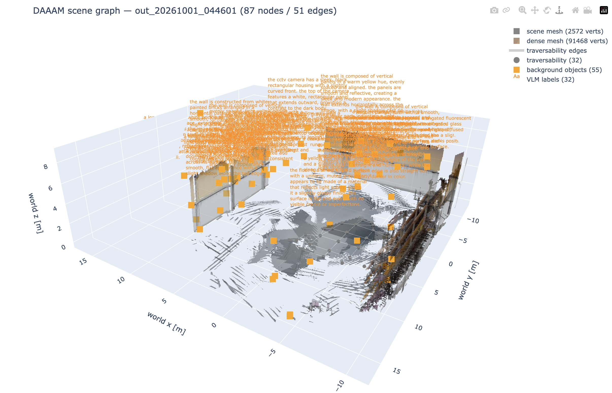
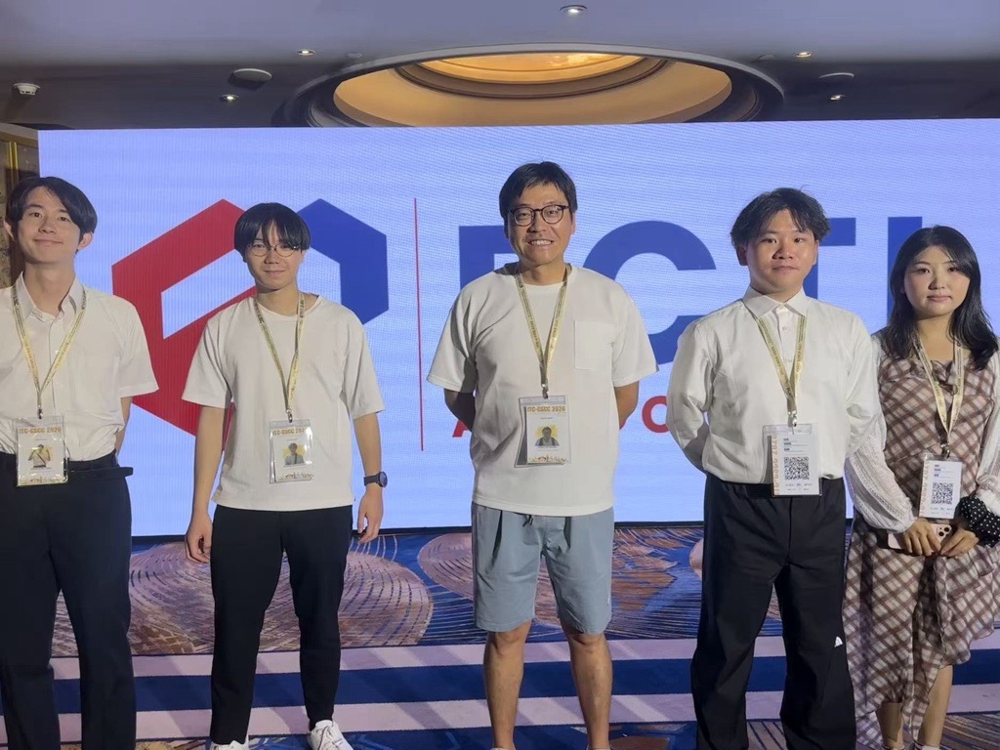
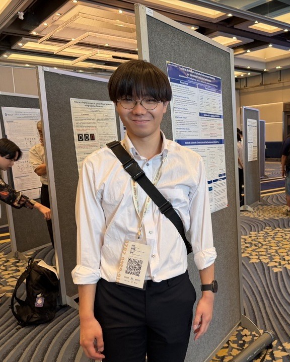
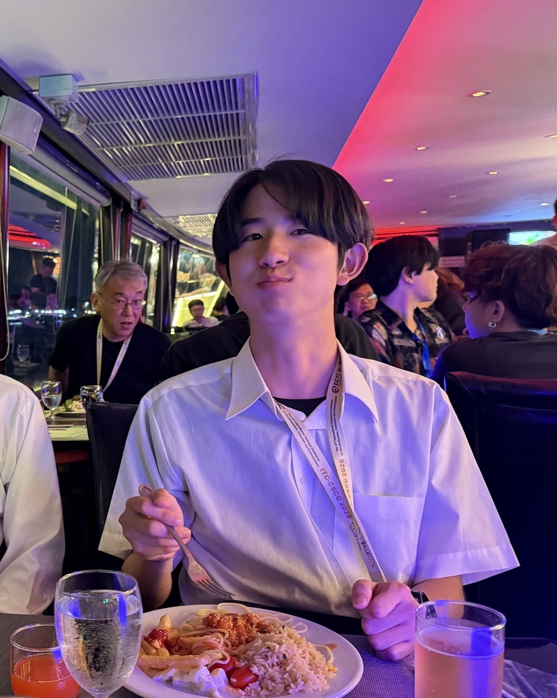
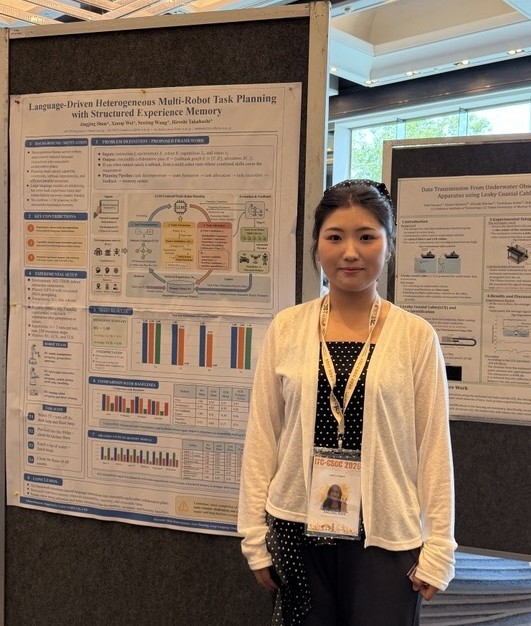

The deployment problem
Site-specific modeling and control are labor-intensive. Unchecked AI-generated plans can fail when geometry, task rules, or robot capabilities differ from the assumed conditions.

Ehime University Computer Science Lab · Taiyo Yuden · Mirabot
An AI-native industrial robot system that connects real-world observations, task planning, and robot execution through a digital twin.
Our goal: robots that adapt to changing sites, with plans evaluated before deployment and field observations returned to the virtual world.
Research overview
Industrial sites change as people, equipment, and materials move. Rebuilding a simulator and hand-coding robot behavior for every change makes deployment costly. We study a shared environment model that supports perception, agent planning, and execution across different robot bodies.
Site-specific modeling and control are labor-intensive. Unchecked AI-generated plans can fail when geometry, task rules, or robot capabilities differ from the assumed conditions.
Combine Real-to-Sim modeling, Prime/Slave agents, deployment interfaces, and persistent scene updates. Simulation and formal methods provide testable boundaries around AI-generated behavior.
These modules are being integrated. The complete sensing-to-replanning loop has not yet been validated at an industrial site.
HIME / EHIME UNIVERSITY
HIME is our laboratory-developed AI agent robot. Its public demonstrations connect natural-language requests and software tools with physical movement, perception, and interaction with people.
HIME scenarios and earlier demonstrations01 / Real-to-Sim
We reconstruct static spaces and object assets for robot simulation. The published single-photograph pipeline now informs work on multi-frame association and measured 3D geometry, so that object identity, scale, and orientation can support scene placement.

Measured point clouds and 3D bounding boxes provide a geometric basis for placing generated objects. The image shows a simple-scene experiment, not a completed industrial reconstruction benchmark.
ITC-CSCC 2026 / Real-to-Sim paper02 / Prime / Slave Agents
The Prime Agent interprets work requests, assigns capabilities, and plans across robots. Slave Agents connect the plan to navigation, sensing, and manipulation tools. We combine symbolic planning and verification with environment knowledge and execution feedback.
In simulation, the request to inspect all waypoints is handled using two robots. The management prototype also includes chat, task scheduling, observation images, and alert records.
Inspection agent execution logPrime Agent plans a two-object transport task for multiple robots03 / Sim-to-Real
We build the Slave Agent around Go2, ROS 2/Nav2, sensors, and robot-arm interfaces. Physical demonstrations establish individual capabilities, while simulation provides a controlled setting for preparing navigation and manipulation integration.

The shared mount brings Odin1 and MID-360 together. We are preparing calibration and a division of sensing roles before integrated field evaluation.
Go2 motion in a showroom simulation04 / Physical-Virtual Interaction
Physical-Virtual Interaction returns observations to the digital twin. We separate static geometry from changing object states, preserve object identity and history, and work toward updating simulation and replanning from that evidence.

DAAAM/Hydra experiments and scene-graph access help define how observations enter the shared model. Current warehouse queries mainly describe background structures; dynamic objects and trajectories still need further integration.
We report component tests and simulation results separately from physical deployment. No overall completion percentage or industrial safety guarantee is claimed.
ITC-CSCC 2026: reconstruction, Real-to-Sim, multi-robot planning, and verification-oriented environment modeling.
Heterogeneous simulation testbed; integrated planner evaluation remains a next step.
Passed by the object-state prototype. This is component-level testing, not a field success rate.
Four papers were presented at ITC-CSCC 2026, covering indoor reconstruction, Real-to-Sim asset generation, heterogeneous multi-robot task planning, and symbolic environment modeling for verification.
Shintaro Ono, Kerun Li, Tomoki Kuzuhara, Koji Kinoshita, Senling Wang, Hiroshi Takahashi
Open PDFKerun Li, Senling Wang, Shintaro Ono, Tomoki Kuzuhara, Hiroshi Kai, Hiroshi Takahashi
Open PDFJingjing Shen, Xiaoqi Wei, Mitsuaki Matsumoto, Senling Wang, Hiroshi Takahashi
Open PDFTomoki Kuzuhara, Senling Wang, Kerun Li, Shintaro Ono, Hiroshi Kai, Hiroshi Takahashi
Open PDFThe project is led by Ehime University researchers and developed with industrial partners who bring robot deployment context, field requirements, and implementation support.


Computer Science Lab, Graduate School of Science and Engineering
Industrial collaboration and robot-related deployment context
Robotics collaboration and physical AI implementation support
Project Director / Computer Systems
Prof. Hiroshi Takahashi is Vice President of Ehime University, an IEICE Fellow, and Project Director. His long-running research covers computer-system design and testing, VLSI fault testing and diagnosis, dependable and fault-tolerant computing, reconfigurable logic, and hardware security. In this project, he provides academic and systems leadership for integrating reliable computing, formal verification, digital twins, and industrial robotics.
Project Lead / Computer Systems
Dr. Senling Wang received his Ph.D. in Information Engineering from Kyushu Institute of Technology in 2014 and leads this project. His research spans dependable computer systems, VLSI testing and fault diagnosis, reconfigurable computing, hardware security, and machine-learning-assisted testing and reliability. Building on this systems background, he develops digital-twin and Physical AI platforms that connect environment modeling, verified AI-agent planning, robot simulation, and industrial field validation.

Embedded Systems / Real-to-Sim
Kerun Li is a second-year master's student in the Graduate School of Science and Engineering at Ehime University, specializing in embedded systems development. His work spans robot SLAM and navigation, computer vision, generative AI, and Real-to-Sim 3D scene reconstruction. As first author of the team's single-photograph Real-to-Sim pipeline, he develops methods that turn real observations into reusable 3D assets and physically plausible simulation scenes. He holds two utility model registrations, two registered designs, and one software copyright, with one invention patent application under examination. As an undergraduate, he was named an Outstanding Graduate of Zhejiang Province and received the Zhejiang Provincial Government Scholarship.

Cybersecurity / Formal Verification
Tomoki Kuzuhara is a second-year master's student in the Graduate School of Science and Engineering at Ehime University, specializing in cybersecurity. He develops and verifies the Prime Agent and builds knowledge bases for industrial fields. As first author of Env2FSA, he studies visual grounding, PDDL-consistent symbolic environment modeling, and counterexample-guided formal verification of robot behavior controllers.

Image Processing / Environment Modeling
Shintaro Ono is a second-year master's student in the Graduate School of Science and Engineering at Ehime University, specializing in image processing. His project work covers static spatial model generation, analog meter digitization, and in-field change detection. As first author of a comparative study of indoor reconstruction methods, he evaluates BEV, heightmap, and plane-based approaches for generating simulation-ready static geometry from LiDAR point clouds.

Planning Optimization / Multi-Robot Systems
Jingjing Shen is a second-year master's student in the Graduate School of Science and Engineering at Ehime University, specializing in planning optimization. She designs and validates action-planning agents. As first author of the team's language-driven heterogeneous multi-robot planning framework, she studies natural-language task decomposition, capability-aware team formation and allocation, structured experience memory, and feedback-driven plan repair.
Robot Autonomy / Slave Agent
Mizuki Takahashi is a first-year master's student in the Graduate School of Science and Engineering at Ehime University, specializing in autonomous mobility and manipulation control for AI robots. He develops the Slave Agent that grounds tasks issued by the Prime Agent in the physical world, integrating Unitree Go2 locomotion, SLAM-based localization and mapping, and robot-arm grasping and transport. His next work will integrate SO-101 Arm and back-mounted arm configurations with Go2 for handover and delivery tasks, while fine-tuning Vision-Language-Action models for robot manipulation conditioned on visual observations and language instructions.
We are looking for partners interested in industrial digital twins, AI-native factory systems, field robotics, multi-robot planning, sim-to-real validation, and physical-virtual interaction.
Project contact: Senling Wang (王 森レイ)
Aggregate page views and country-level reach since analytics was enabled on 24 July 2026.
Explore aggregate visits by country and page.
.gif){kind=link}